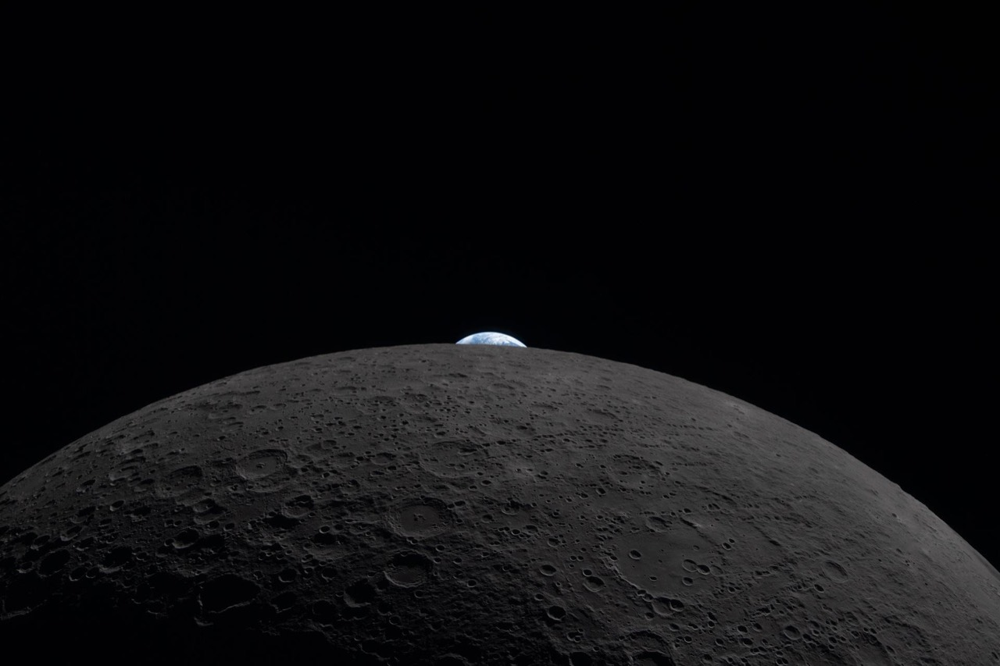
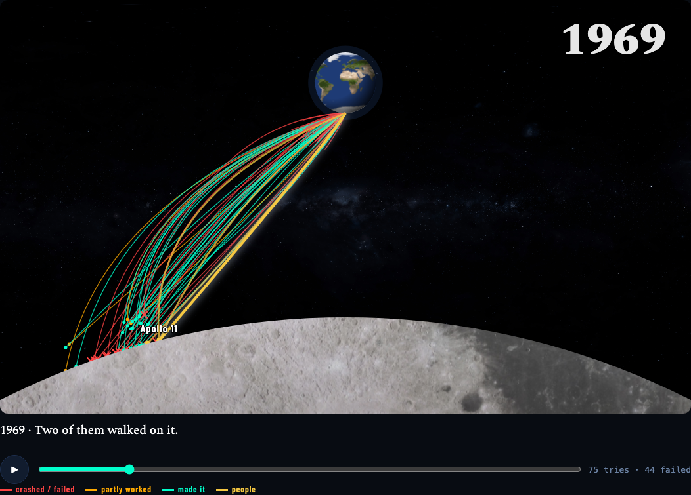
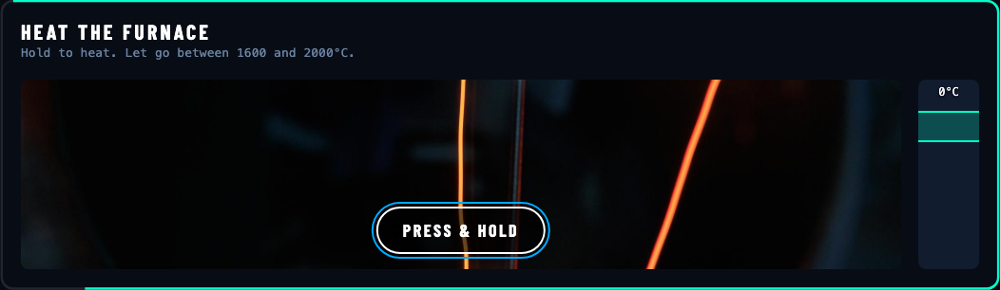
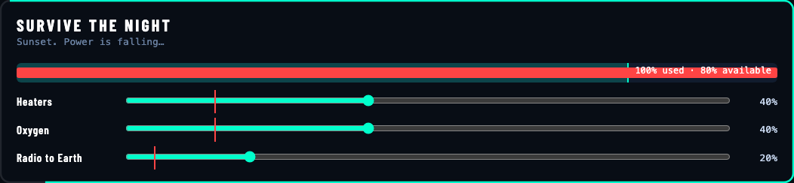
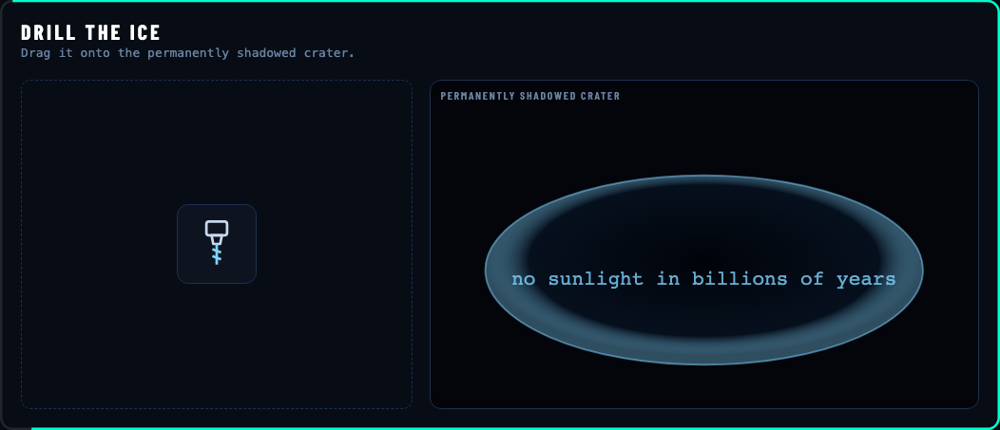
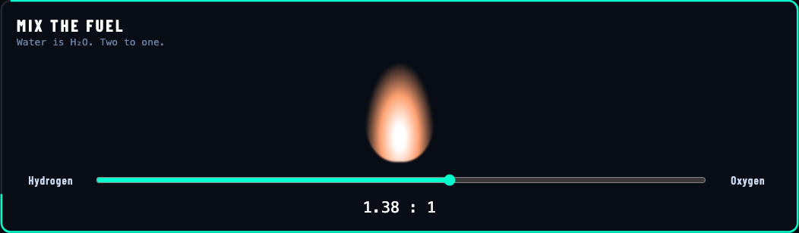
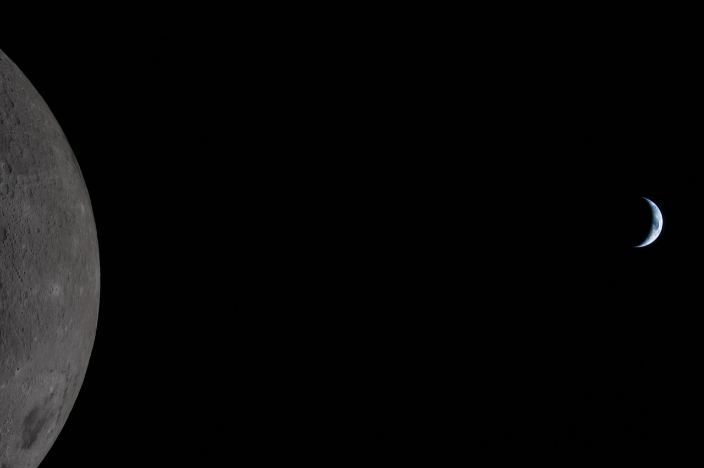

Everything They Left · storyboard v1 · prep for Sat 12 Sep
Settle every frame now, so Saturday is only building.
Each frame below is one state of the game, with an ID, element names that match the real build, a direct link to that state, and "done when" checks. Click anything to annotate it. Tune the timing in the feel lab and lock the numbers in.
Feel is decided at 1:40pmBefore: "7 s feels too short" comes up during the build Now: tune it in the feel lab and lock the numbers today
Feedback is fuzzyBefore: "the red thing near the top is weird" Now: "F5b · qte-border · goes red too early"
Reaching a bug takes 3 minutesBefore: replay the opening and 2 crises to see one screen Now: ?c=air&beat=move jumps straight there, for you and for Cursor
Part 0 · newStory v2: “the watcher” is a child born on the Moon
Asha narrates everything. She calls humans “them” and Earth “the blue one”, so it reads like an alien watching. She's only revealed at the very last beat. Every screenshot below comes from the working prototypes: open prototypes.html (tabs across the top; add ?speed=4 to fast-forward).
1

Intro · the watcher
That’s them. The blue one. They live at the bottom of an ocean of air so deep they never even think about it. I’ve never felt rain. They get it for free.
Real photo: Artemis II crew, April 2026 (NASA). In the 3D stage, Earth rises over the limb.
2
41.2 s
Most of them can hold their breath for less than a minute. Try it.
Hold your breath · HOLD
Outside their air, they’d get about 9 to 12 seconds before blacking out.
Then Leonov's spacewalk: “And still, they kept trying to reach the Moon.”
3

The Attempt Map · DRAG the years
1969 · Two of them walked on it.
Every arc is a real mission (136, from 1958 to 2026, in data/missions.json). By 1969 there had already been 75 tries and 44 failures. 19 moments pause the scrub, including the 14-year silence, Chandrayaan-2 → 3 and SLIM landing upside down. It ends: “136 tries. 55 failures. Every one of them was somebody’s life’s work. They kept coming.”
4




The game · you play her great-grandmother
You’ll play the first one who stayed: a commander at the south pole.
Air: hold to heat the furnace and let go in the melt zone (1,600–2,000 °C). Cold: balance heaters, oxygen and radio as the power falls. Water: drag the drill into the dark crater. Food: plant 3 seedlings. Way Home: push the felt-tip pen into the breaker, then mix the fuel to exactly 2:1. After each crisis Asha adds one line: “They made air out of rock. I think about that more than I should.”
5

The reveal
You’re probably wondering who I am.My name is Asha. I’m twelve.I was born at Shackleton Base in 2089. I’ve never been to Earth.To me, that’s the alien planet.The commander you just played was my great-grandmother. This is what they teach us in school.You wanted to know when. Moon base: 20__?For me, it’s history. For you, it’s a choice.
The 3D shot: standing at Shackleton, Earth sitting on the horizon. That's real, because from the south pole Earth never rises or sets. It's the same shot as Way Home, so the ending mirrors the game.
Part 1Feel lab: tune the numbers you'd otherwise argue about at 1:40pm
These are working versions of the timer, the switch and the checkpoint logic. Play a round, miss on purpose three times, flip the switch, and adjust until it feels right. Then press Lock these values.
Live: YOUR MOVE beat
Click the action before the border runs out. Let it run out 3 times to see the checkpoint and the prompt suggesting the timer switch.
OXYGEN GENERATOR: OFFLINE
CLICK · ENTER · TAP
O₂ DEPLETEDRestoring checkpoint…
Want to read at your own pace? Turn off the timer.Shows once, on the 3rd miss
Misses: 0 · Timer: ON · Press Play.
Part 2Frames: every state the build has to hit
Frames use the Air crisis. The other 4 crises reuse the same frames with their text from content.js. The Moon is a flat stand-in here; in the build it's the 3D stage. Click any element to annotate it, e.g. "F5b · qte-border · …".
Opening
F0Title?screen=title
Sol 1 at Shackleton
HOLD YOUR BREATH
PRESS & HOLD SPACE
The 3D Moon spins slowly, lit from the side, with Earth visible
Hold button works with mouse, touch, and a held spacebar
No sound yet (the browser blocks audio until the first hold)
F1aOpener · holding?screen=opener
23.4 s
keep holding…
Counter ticks in tenths while held; the ring pulses slowly like breathing
Releasing before 1 s doesn't count, and shows "Take a real breath"
The first hold unlocks audio; the Sputnik beep plays on release
F1bOpener · result?screen=result&s=41
41 seconds.
Not bad. On Earth, that’s a party trick.
In a vacuum, you’d get about 9 to 12 seconds of useful consciousness.
18 March 1965. Alexei Leonov…
The number is the visitor's real hold time
Lines appear one at a time; any click or key skips ahead
Ends on "Sol 1. Everything is going great." then cuts to F2
One crisis = 7 frames (Air shown)
F2Alarm?c=air&beat=alarm
OXYGEN GENERATOR: OFFLINE
LOG, SOL 1: So. The machine that makes my air just died. Reserve tanks: 8 hours.
The camera settles on the waypoint before the letterbox bars slide in
Alarm sound (Web Audio tone, no file) plays once and doesn't loop
Log types at the locked speed; a click finishes it instantly
Switch and checkpoint dots stay visible in every crisis frame
F3Flashback?c=air&beat=flashback
APOLLO 13 · APRIL 1970
Someone’s been here before
Three men crowd into a lander built to keep two men alive for two days.
The spare CO₂ filters are square. The holes are round.
♪ "Houston, we've had a problem"
The photo pans slowly (Ken Burns); the Moon dims behind it
The audio clip plays only its trimmed 3–5 s
Caption lines appear one at a time; a Next arrow appears after the last
F4The price?c=air&beat=price
June 1971 · Soyuz 11
On the way home a valve opened and the cabin’s air leaked into space.
Georgy Dobrovolsky, Vladislav Volkov and Viktor Patsayev are still the only people ever to die in space.
Silence: no music or sound on this beat
Greyscale photo, slower text; no skipping for the first 2 s
Tone is respectful: no jokes on this frame
F5aYour move · timer full?c=air&beat=move
OXYGEN GENERATOR: OFFLINE
CLICK · ENTER · TAP
The border starts full, in cyan
Keyboard focus lands on the button automatically; Enter triggers it
The timer starts only once the button is fully on screen
F5bYour move · almost out?c=air&beat=move&t=80
OXYGEN GENERATOR: OFFLINE
CLICK · ENTER · TAP
The remaining border is red past the "turns red at" knob
?t=80 freezes the border at 80% gone, so it can be screenshotted
The status line starts blinking during the red phase
Generated from content.js memorial + CREDITS.md, not typed by hand
Every CC BY credit present (required by the licences)
M1Phone · your move?c=air&beat=moveat 390×844
OXYGEN GENERATOR: OFFLINE
The action button is at least 44 px tall and within thumb reach (lower half)
The switch stays top-right, clear of the notch
Photo and caption stack vertically on flashback frames
Part 3Build contract: how Saturday avoids the test-and-explain loop
Paste this into Cursor as the first message, along with PLAN.md and content.js. Build the direct links and the debug overlay in the first 15 minutes; every test after that uses them.
Link parameter
Does
?screen=title|opener|result|finale|credits
Jump to a non-crisis screen
?c=air|cold|water|food|home
Jump to a crisis (camera snaps to its waypoint)
&beat=alarm|flashback|price|move|fail|payoff
Jump to a beat inside it
&t=0–100
Freeze the timer border at N% gone (for screenshots)
&timer=off · &misses=N
Start with the timer off / N misses already counted
&speed=4
Fast-forward typing, camera and animations 4×
&debug=1
Label every element with its name (toggle at the top of this page to preview)
Element name
What it is
hud-switch
Timer switch, top-right
checkpoints
5 crisis dots, top-centre
letterbox
Black cinematic bars
status · log
Red alarm line · typed log text
photo · caption · audio-chip
Flashback image, text, clip label
qte · qte-border
Action button · its draining border
flash · toast
Fail overlay · 3rd-miss prompt
stamp · meter
Payoff stamp · sci-fi meter
Cursor checks its own work (paste after each section)
Open each URL in the direct-links table for the frames we just built,
with &debug=1. Check the console for errors first. Screenshot each one.
Compare it with the matching frame in storyboard.html and its
"done when" checklist.
List every mismatch as: F# · element-name · expected → actual
Fix them all, re-screenshot, and repeat until the list is empty.
Only then show me the screenshots.
If Cursor's agent can't open a browser, you click the same links yourself. It still takes seconds, not minutes.
When you do spot something: one line
F5b · qte-border · expected red from 70% → actual red from start
F3 · photo · expected slow pan → actual static
F7 · toast · expected once → shows every miss
Frame ID + element name + expected → actual. That's the whole bug report, with no screenshots or long explanations needed.
Known traps: all 5 hit while building this storyboard
Paste these into Cursor's rules so it doesn't rediscover them at 2pm.
Timer border never looks full:vector-effect: non-scaling-stroke + pathLength breaks SVG dashes in Chrome. Drop non-scaling-stroke, or set the SVG viewBox to the button's pixel size.
Overlays show when they shouldn't:display: grid/flex beats the hidden attribute. Add [hidden]{display:none!important} on line 1.
“’” and “—” turn into —: missing <meta charset="utf-8">. Every page needs it; content.js is full of curly quotes.
Timer misbehaves in background or hidden tabs:setInterval gets throttled. Drive the timer with a CSS animation + animationend (as here), not JS timers.
Script dies silently on load: a const used before it's declared throws a TDZ error and nothing after it runs. Cursor's self-check must read the console for errors, not just take screenshots.